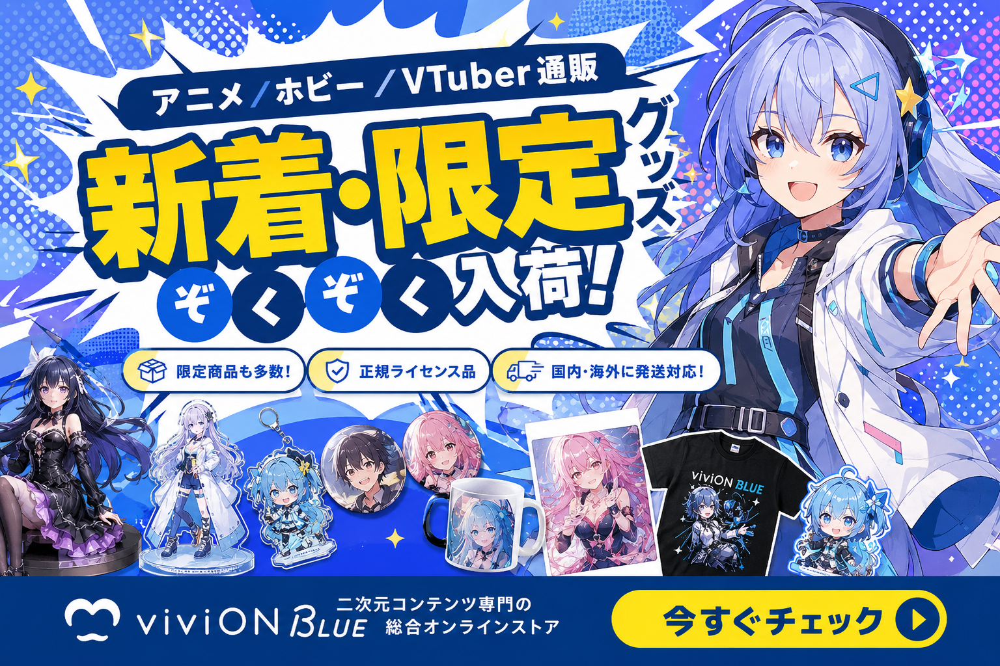
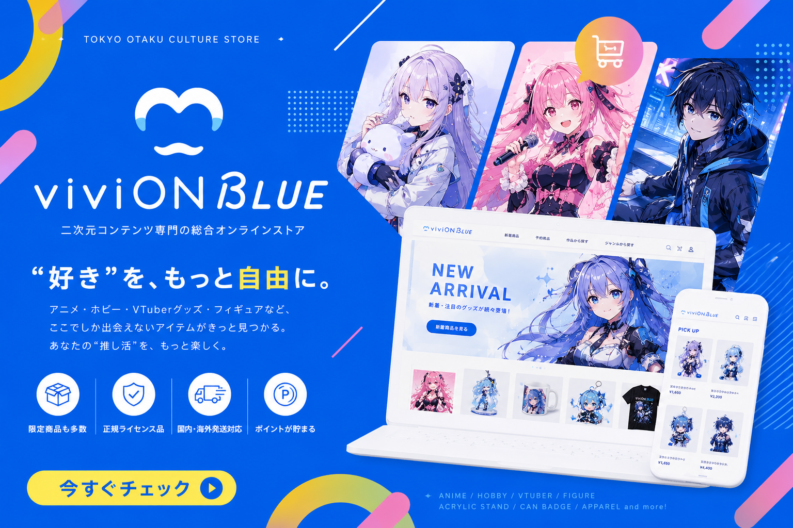
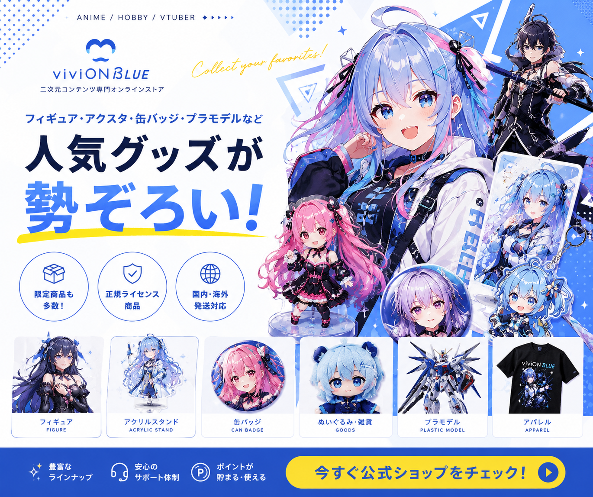
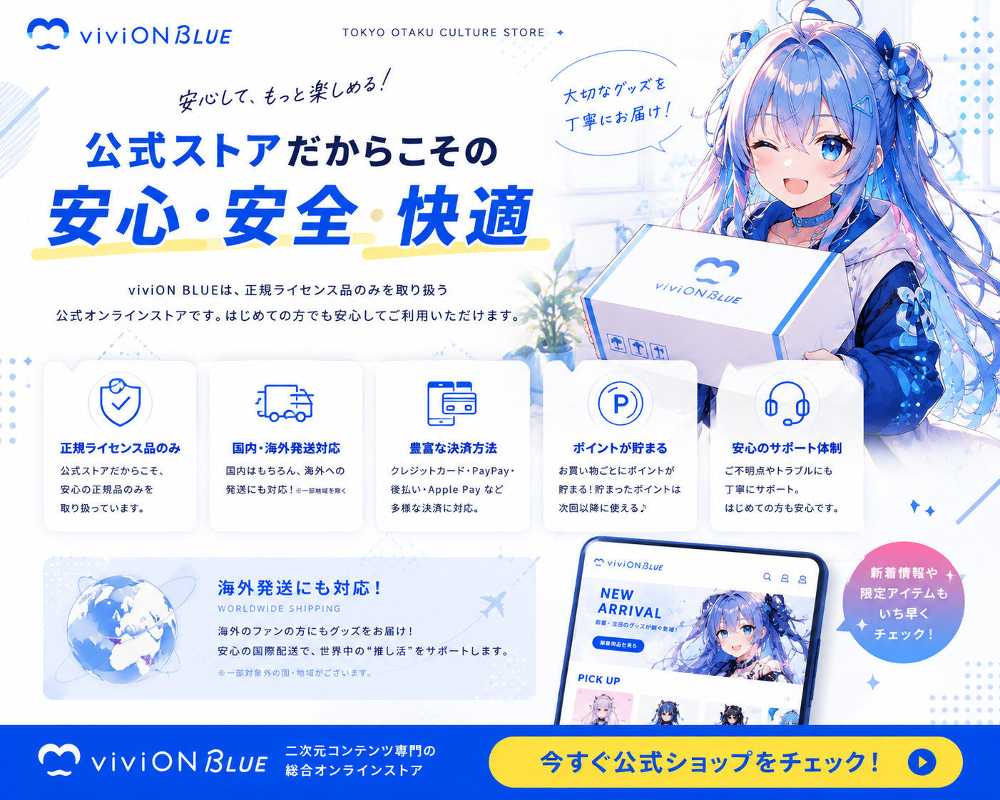
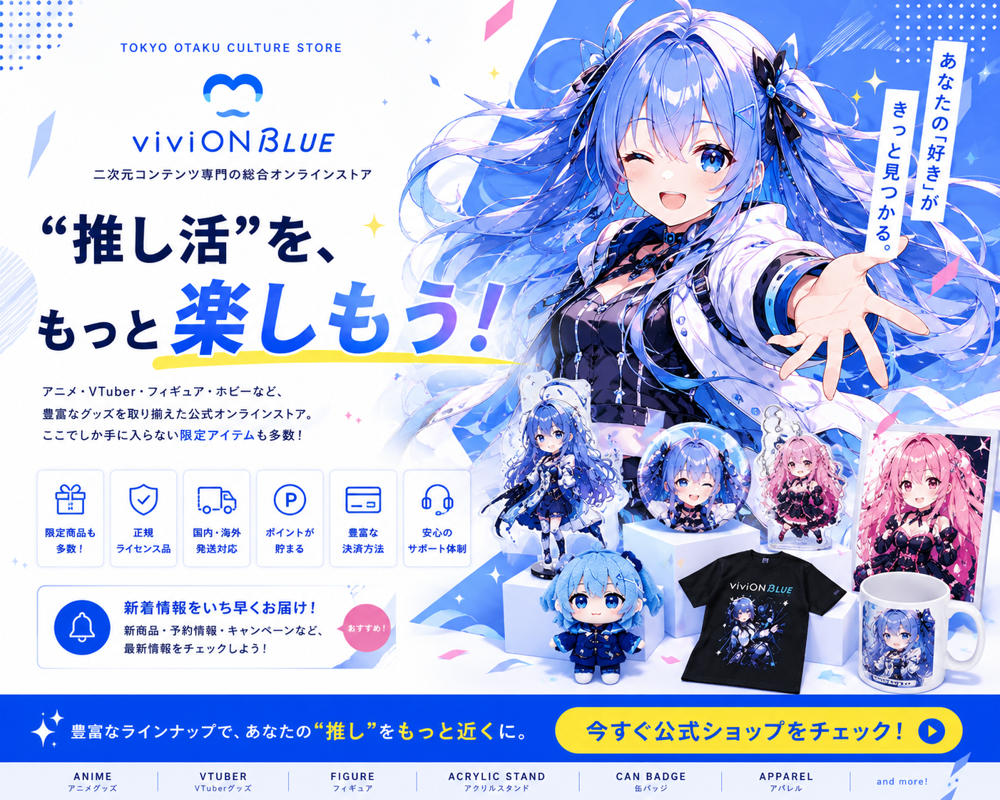

アニメ、 VTuber、 フィギュア、 アクスタ、 缶バッジ。 二次元カルチャーを、 もっと自由に楽しむための オンラインストア「viviON BLUE」。
▶ 公式ショップを見るviviON BLUEは、 アニメ・ゲーム・VTuber・ホビー領域の商品を取り扱う、 二次元コンテンツ専門オンラインストア。 限定商品や公式グッズ、 予約アイテムなど、 ここでしか出会えないアイテムも展開されています。

アニメ、 ゲーム、 VTuber、 ホビー。 viviON BLUEは、 “好き”をもっと深く楽しみたい人のために展開されている、 新しいオンラインストアです。
ここでしか手に入らない商品や予約アイテムも展開。
正規ライセンス商品のみを取り扱う安心感。
アニメ・VTuber・フィギュア・ホビーまで対応。
グッズを集めるだけではなく、 作品やキャラクターとの距離をもっと近く感じたい。 viviON BLUEでは、 そんな二次元ファンへ向けた商品展開が行われています。 限定グッズやコラボ商品、 アクリルスタンド、 フィギュアなど、 幅広いアイテムを取り扱っていることも魅力。 “好き”をもっと自由に楽しみたい方から注目されています。

人気VTuberグッズや、 コレクション性の高いアクリルスタンド、 缶バッジなども展開。
二次元グッズを探している方の中には、 「他では見つからない商品が欲しい」 という方も少なくありません。 viviON BLUEでは、 予約商品や限定アイテムも多数展開されており、 公式ショップならではの特別感を楽しめることも魅力。 新作情報や予約開始タイミングをチェックしているファンも増えています。

人気作品のフィギュアやホビー商品も展開されており、 コレクションを楽しみたいユーザーからも注目されています。
新作フィギュアや人気商品も予約可能。
飾る楽しさを広げる豊富なラインナップ。
安心して購入しやすい公式通販サイト。
フィギュアや限定商品は、 転売やプレミア価格などが話題になることもあります。 その中で、 正規ライセンス商品を取り扱う公式ショップとして、 安心感を重視して利用するユーザーも増えています。 viviON BLUEは、 通販サイトとしての安全性や信頼性を重視したい方からも注目されています。

通販サイトを利用する際、 「ちゃんと届く？」 「正規品？」 と不安を感じる方もいます。 viviON BLUEは、 正規ライセンス商品のみを取り扱うオンラインストアです。
viviON BLUEでは、 クレジットカードだけでなく、 PayPayやApple Pay、 後払い決済などにも対応。 ポイント制度も導入されており、 日々の買い物をもっと楽しめる仕組みも展開されています。 通販サイトとしての使いやすさや、 安心して利用しやすい環境も、 人気の理由のひとつです。

アニメ、 VTuber、 ホビー、 フィギュア。 好きなカルチャーを、 もっと自由に楽しみたい人のためのオンラインストアとして、 viviON BLUEは注目されています。
限定商品、 公式グッズ、 予約アイテム。 viviON BLUEは、 二次元カルチャーをもっと楽しみたい人へ向けた、 新しいオンラインストアです。
▶ viviON BLUE公式ショップを見るviviON BLUEは、 アニメ・ゲーム・VTuber・ホビー領域の商品を中心に取り扱う、 二次元コンテンツ専門オンラインストアです。 フィギュア、 アクリルスタンド、 缶バッジ、 ステッカー、 限定グッズなど、 幅広いジャンルの商品を展開。 “推し活”をもっと楽しみたい人からも注目されています。
通販サイトでグッズを購入する際、 正規品か不安に感じる方もいます。 viviON BLUEでは、 正規ライセンス商品のみを取り扱っているため、 安心して利用しやすい公式ショップとしても人気。 限定商品や予約商品も展開されており、 ここでしか手に入らないアイテムを探している方との相性も良いオンラインストアです。
VTuberグッズやフィギュア、 ホビー商品など、 コレクション性の高い商品も多数展開。 アクリルスタンドや缶バッジなど、 人気アイテムも豊富に揃っています。 推し活をもっと楽しみたい方からも注目されています。
・アニメグッズ通販サイトを探している方 ・VTuberグッズを探している方 ・限定アクスタを集めたい方 ・フィギュア通販サイトを探している方 ・正規ライセンス商品を購入したい方 ・“推し活”をもっと楽しみたい方 ・公式ショップ限定商品をチェックしたい方